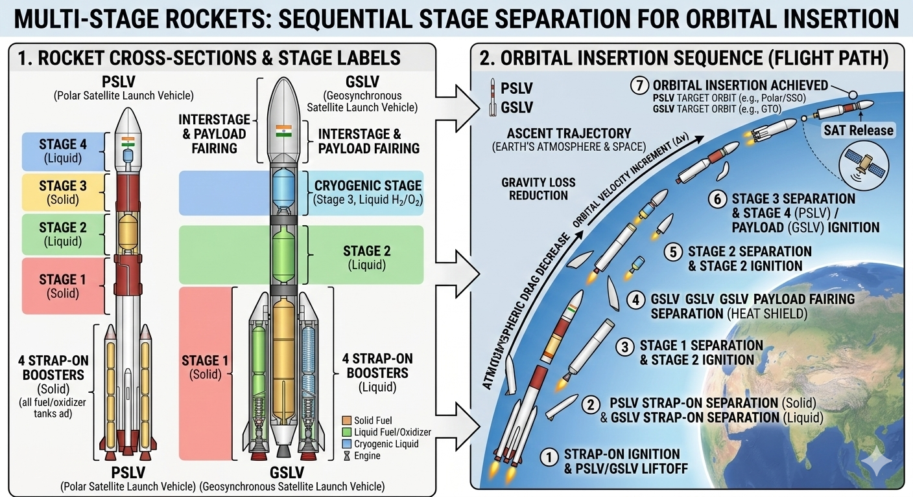
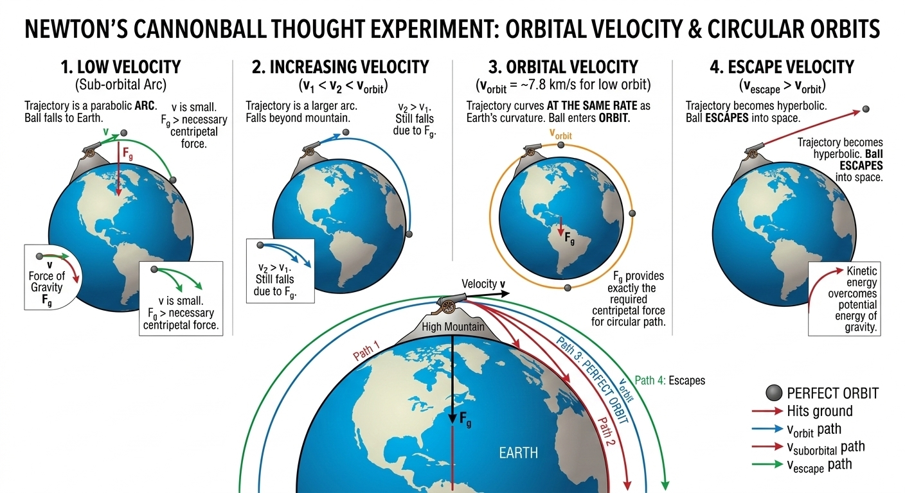
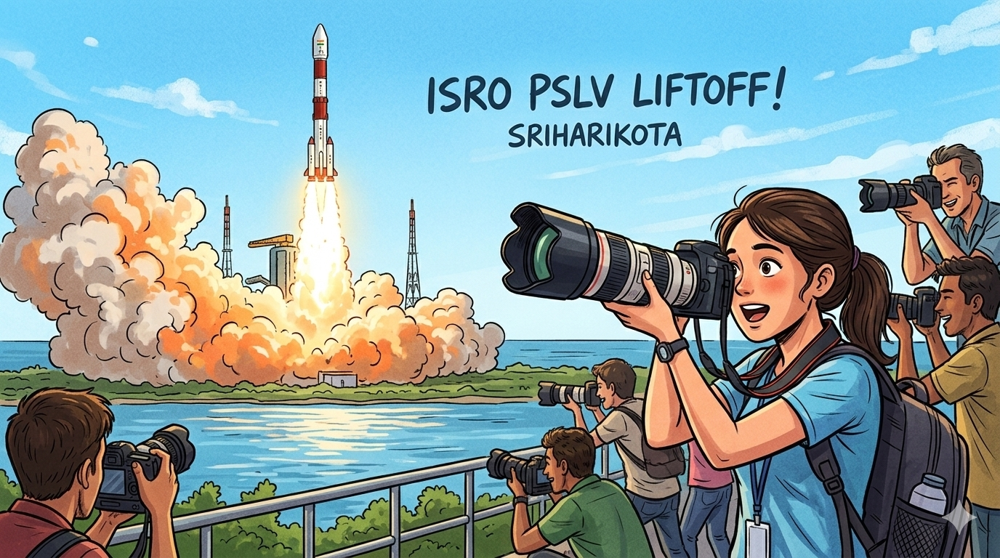

Physics of Rocketry & Orbital Mechanics – Class 12 Level
Rockets work on Newton’s 3rd law: action-reaction. Hot gases expelled backward at high velocity produce forward thrust. In vacuum (space), there is no air to push against — thrust comes purely from momentum conservation.
Tsiolkovsky Rocket Equation – The Heart of Spaceflight
The change in velocity (Δv) a rocket can achieve depends only on exhaust velocity and the ratio of initial to final mass:
This is why staging is essential — discarding empty tanks reduces \( m_f \) dramatically.
Specific Staging Physics: ISRO’s PSLV & GSLV

PSLV (4 Stages)
- Stage 1: Solid (PS1 + 6 strap-ons) – 4,800 kN thrust, burns 1st stage fuel
- Stage 2: Liquid Vikas engine – precise control
- Stage 3: Solid – high altitude boost
- Stage 4: Liquid – final circularisation at 7.8 km/s
Payload to LEO: 1,750 kg. Total Δv ≈ 9.5 km/s after losses.
GSLV Mk III (LVM3)
- Two solid S200 boosters (strap-ons)
- Liquid core (L110) – Vikas engines
- Cryogenic upper stage (CE-20) – LOX/LH₂, Isp = 443 s
Payload to GTO: 4,000 kg. Cryogenic stage gives highest specific impulse in India.
Orbital Mechanics & Reaching Orbit
To stay in low Earth orbit (LEO ~300 km), a satellite needs orbital velocity ~7.8 km/s. Gravity provides centripetal force:

Cultural Physics: The Coconut-Breaking Ritual at ISRO Launches

Before every ISRO launch, a coconut is ceremonially broken at the launch pad — an ancient tradition for blessings and success. But what’s the physics?
Typical coconut: mass \( m = 1.5 \) kg. To crack it, it must experience sudden deceleration. Assume it is smashed with relative speed \( v = 6 \) m/s (typical hand strike or drop from ~2 m) and comes to rest in contact time \( \Delta t = 0.02 \) s.
Average force \( F_{\text{avg}} = \frac{\Delta p}{\Delta t} = \frac{9}{0.02} = 450 \) N
Impulse \( J = \Delta p = 9 \) N·s
This 450 N force is enough to crack the shell (real breaking strength of coconut ~300–500 N). Compare to rocket thrust: PSLV Stage-1 produces 4,800,000 N — over 10,000 times more! The ritual symbolises transferring human energy and prayers into the massive impulse of the launch.